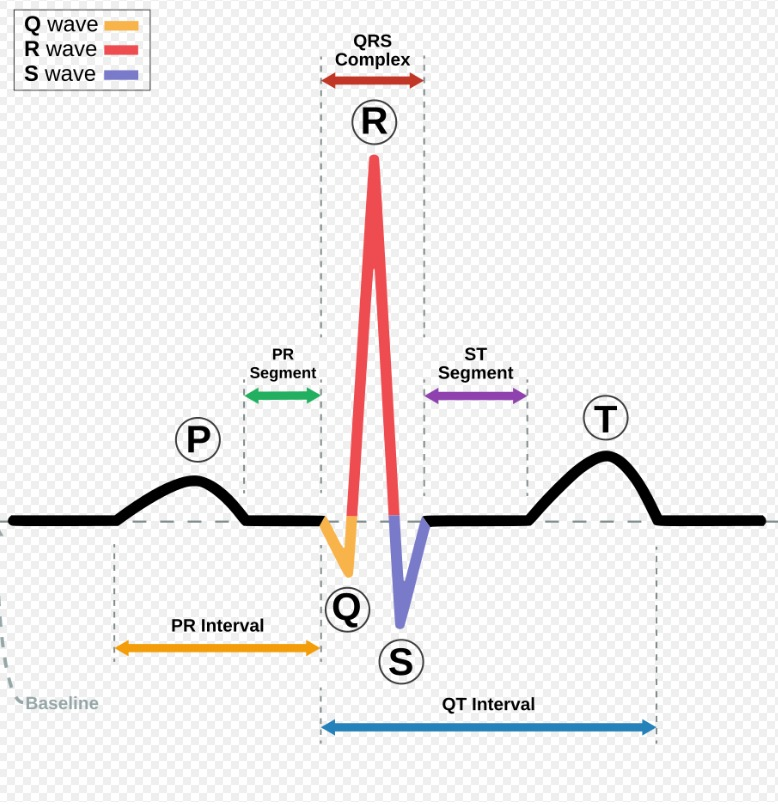
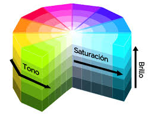

ℹ Información del proyecto
Acerca del
Proyecto
Conoce los objetivos, tecnologías y al equipo detrás de este sistema de monitoreo cardíaco inteligente.
📋 Descripción del Proyecto
HeartSense es un sistema de monitoreo de ritmo cardíaco en tiempo real desarrollado como proyecto escolar. Combina hardware embebido (sensores PPG) con una interfaz web moderna para visualizar, analizar y alertar sobre variaciones en la frecuencia cardíaca del usuario.
El sistema está orientado a la prevención de problemas cardiovasculares mediante el monitoreo continuo y las alertas inteligentes en tres niveles: Normal, Precaución y Alerta.
🎯 Objetivos del Proyecto
🛠 Tecnologías Utilizadas
📐 Metodología
Etapas del Proyecto
Semana 1 — Investigación
Revisión bibliográfica sobre sensores PPG, algoritmo Pan-Tompkins y rangos clínicos de frecuencia cardíaca.

Semana 2 — Diseño UI/UX
Definición de paleta de colores, tipografías, estructura de páginas y bocetos de los componentes visuales.

Semana 3 — Desarrollo
Implementación de HTML, CSS y JavaScript. Animaciones ECG, monitor BPM en vivo y sistema de alertas.
Semana 4 — Pruebas y Entrega
Testing en móvil, tablet y desktop. Corrección de bugs, optimización de rendimiento y documentación final.